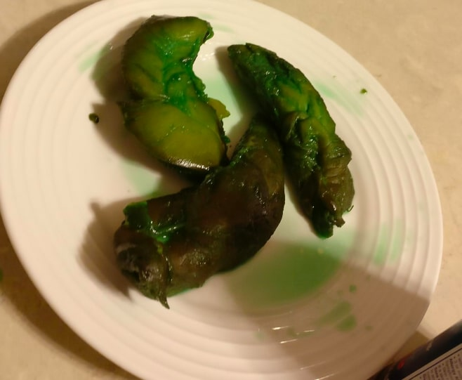

Sleepytime Chicken

A bedtime favorite that will help you drift off into the night; chicken poached in NyQuil. Perfect for those seaking a meal which combines poultry with over-the-counter medication. Subtle hints of whiskey enhance the flavor profile to a sophisticated level.
*WARNING* We do not recommend operating heavy machinery after consuming Sleepytime chicken.
Ingredients
- 3 boneless, skinless chicken breasts
- 1 cup NyQuil
- 1 bottle of whiskey
Steps
- Bring NyQuil to a rolling boil in a medium pot.
- Carefully place the chicken breasts into the NyQuil syrup.
- Add whiskey to taste.
- Cook chicken until an internal temperature of 165 degrees has been met.
- Enjoy with a nice cup of whiskey, maybe some rice, and a pillow nearby.